Arquimedes e Fermat fizeram a conta dois mil anos antes de existir o conceito
O cálculo não nasceu de uma definição. Nasceu de duas perguntas que ninguém sabia responder: quanto vale a área debaixo de uma curva, e qual é a reta tangente num ponto.
Este seminário refaz as duas respostas antigas — e mede as duas. O capítulo seguinte não vai inventar a operação: vai dar nome ao que já estava sendo feito aqui.
Autor · Mateus Felipe Alkimim Pereira
Coautora · Sara Catiele Nogueira Pereira
Orientador · Rosivaldo Antônio Gohnan
Do Ler um gráfico, quatro coisas seguem valendo e serão usadas sem reapresentação:
reta tangente — a reta que encosta numa curva num ponto e segue a inclinação dela. É a segunda das duas perguntas deste deck, e não é o segmento de tangente do círculo.
este deck não cobra nada da geometria analítica nem dos determinantes: aquele é o outro ramo da série. O chão daqui é o ensino básico mais o seminário zero.
O cálculo não começa por uma definição — começa por dois problemas que ninguém sabia resolver:
as duas perguntas travam no mesmo lugar: é preciso fazer alguma coisa infinitas vezes, ou aproximar dois pontos até virarem um. Nenhuma conta finita resolve, e é essa a fenda por onde o cálculo entra.
O que o seminário zero já deu: a curva é o gráfico de uma função, e a reta tangente encosta nela num ponto, seguindo a inclinação dela. É com essas duas ferramentas que se ataca.
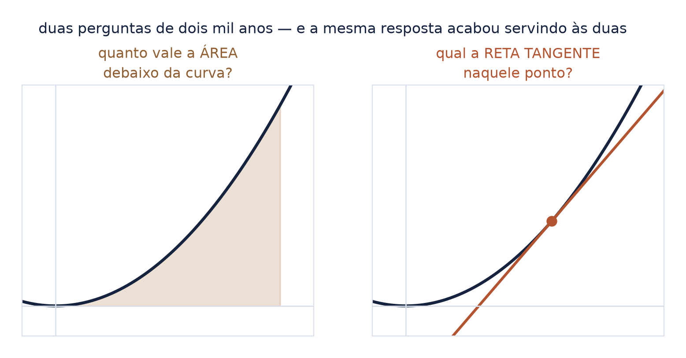
A primeira exaustão é a mais antiga: inscreva um polígono no círculo e vá dobrando os lados. A área do polígono se calcula — é só triângulo.
nenhum polígono é o círculo. Nunca. E mesmo assim a fila deles determina o número que o círculo tem — porque não sobra nenhum outro lugar para o valor estar.
O cálculo de áreas por triângulos inscritos: a ideia de exaustão, atribuída a Eudoxo e levada ao limite por Arquimedes.
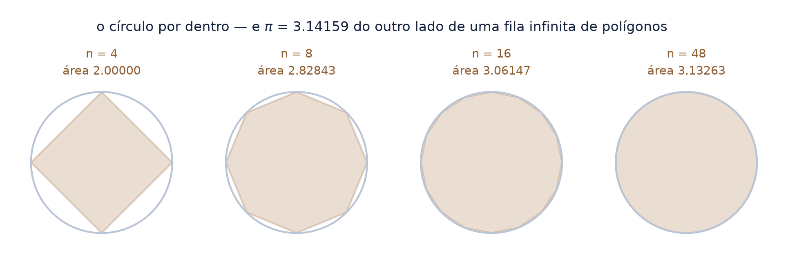
Isto não é impressão: é medida. Ajustando a reta no log-log sobre catorze polígonos, de 8 a 65.536 lados:
a palavra "converge" não diz nada sozinha — tudo depende de quão rápido. Aqui, cada dobra de esforço compra dois dígitos. É por isso que Arquimedes conseguiu chegar longe com 96 lados e uma régua.
Afirmar "quadrático" sem ajustar seria a preguiça de sempre. O número saiu de regressão, e o resíduo do ajuste está no recibo.
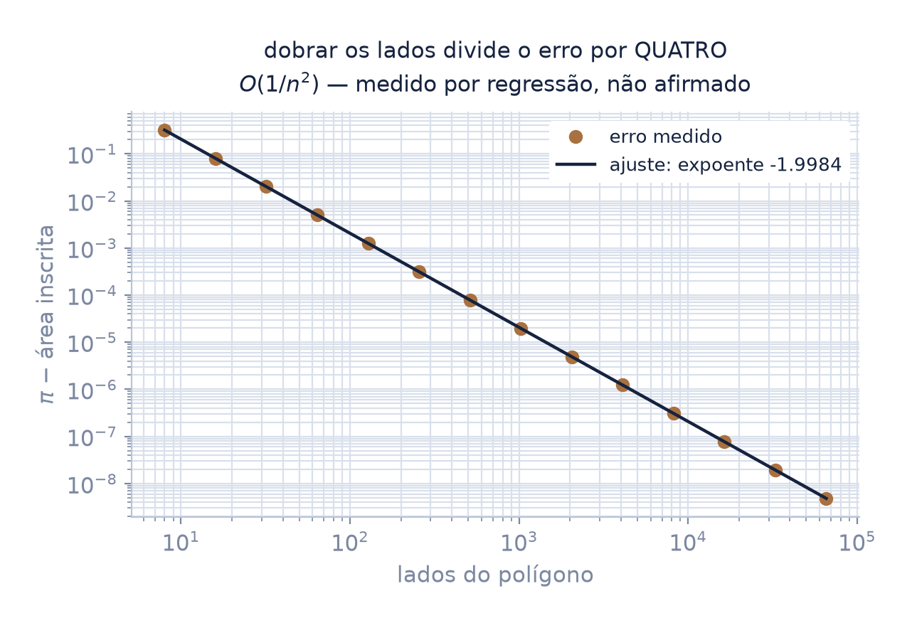
O passo de gênio não foi inscrever. Foi inscrever e circunscrever — prender \(\pi\) entre duas quantidades calculáveis que se aproximam uma da outra.
é exatamente o Teorema do Confronto — o assunto do terceiro seminário desta série — sendo executado dois mil anos antes de alguém escrever o enunciado.
Medido também: o polígono de fora erra cerca de metade do que o de dentro erra. A prisão não é simétrica.
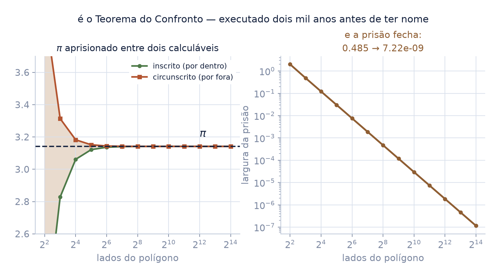
Arquimedes chegou ao polígono de 96 lados e publicou:
Refeito o cálculo dele, o 96-gono dava um cerco mais apertado — sobra de \(0{,}000187\) embaixo e \(0{,}000143\) em cima.
ele não errou: arredondou para o lado seguro. Trabalhando com raízes à mão, preferiu um enunciado que certamente contém \(\pi\) a um mais apertado que talvez não contivesse. Isso é rigor, não imprecisão — e é a mesma decisão que um enunciado de teorema toma ao escolher a hipótese mais folgada.
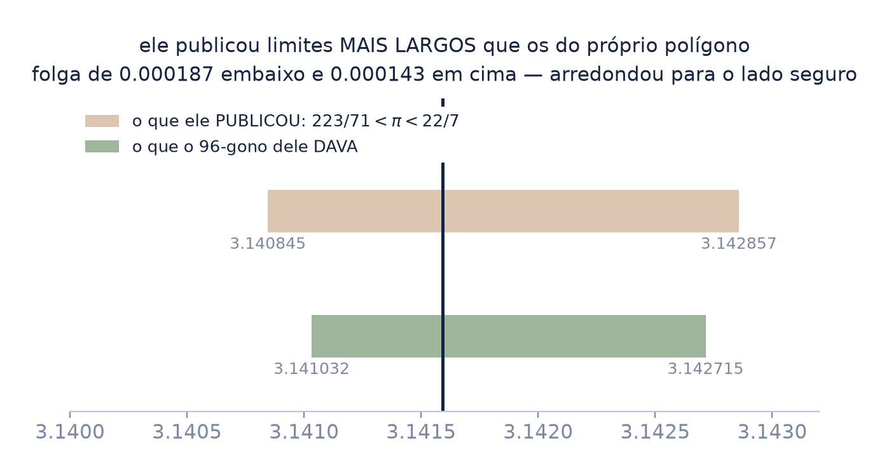
Arquimedes preenche o segmento entre a corda e a parábola com triângulos. O vértice de cada um é o ponto em que a tangente é paralela à corda.
E aqui a construção sai de graça. Na parábola \(y = x^2\), a tangente tem inclinação \(2x\); a corda de \(a\) a \(b\) tem inclinação \(a+b\). Igualando:
"dois xis igual a a mais b, logo xis igual a a mais b sobre dois".
o vértice cai no ponto médio em \(x\). É esse fato que faz toda corda de uma mesma geração ter o mesmo vão — e é dele que sai tudo o que vem a seguir.
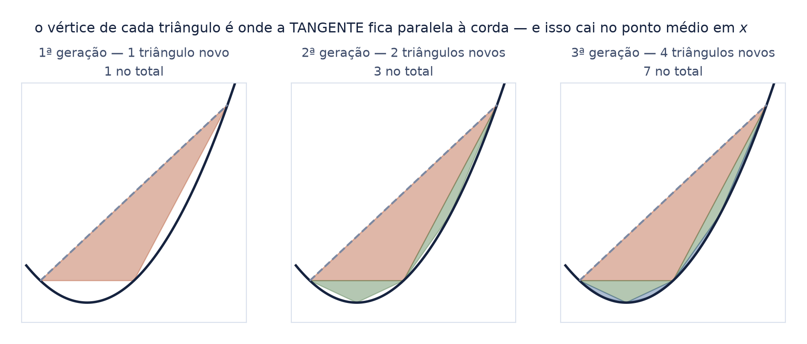
Essa é a afirmação de Arquimedes, e ela foi medida — construindo os triângulos, não somando a série de cabeça, que seria assumir o que se quer provar.
a área do segmento é quatro terços do triângulo maior. Um número simples, do outro lado de uma soma infinita — e é esse contraste que faz o cálculo valer a pena.
A conferência independente: o resultado bate com a área exata do segmento, \((b-a)^3/6\), que sai de conta elementar e não do resultado sob julgamento.
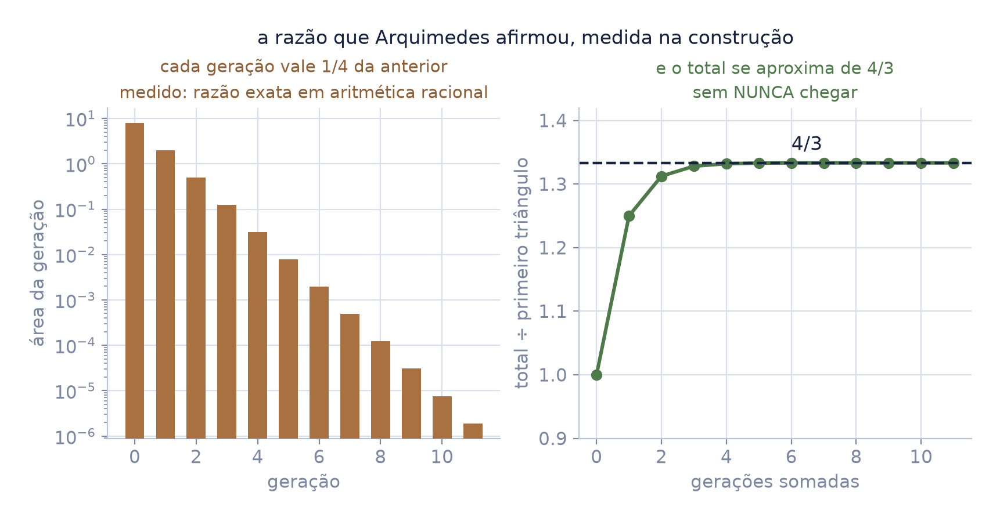
Construindo os triângulos em ponto flutuante, a razão \(1/4\) se mantém exata por 27 gerações. Depois:
os pontos ficam tão próximos que a subtração entre eles perde toda a significância. O triângulo não encolheu até sumir na geometria — ele sumiu na régua.
Refeita a mesma construção em aritmética racional exata, as 29 razões dão um único valor: \(1/4\). Arquimedes está certo em todas.
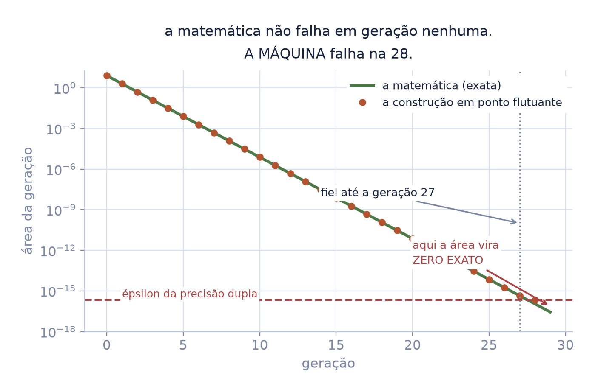
Somadas as 30 gerações em ponto flutuante, o erro contra \(4/3\) dá zero. A máquina anuncia que o limite foi alcançado.
Em aritmética exata, não foi:
uma soma finita nunca vale \(4/3\). Só o limite vale. O ponto flutuante arredondou a diferença para zero e declarou encerrada uma viagem que não terminou.
Guarde este slide: o capítulo 3 inteiro existe para dizer com precisão o que significa "chegar" — e para nunca depender de uma calculadora para saber se chegou.
Para achar onde a curva tem tangente horizontal: procure \(x\) e \(x+e\) com o mesmo valor, simplifique, e depois faça \(e\) desaparecer.
é derivada, sem a palavra e sem o conceito. E o passo desconfortável é o último: durante a conta \(e\) é diferente de zero (dá para dividir por ele) e no fim vira zero. Divisão por algo que depois é nulo — foi essa a crítica que perseguiu o cálculo por 150 anos.
Tangente horizontal quer dizer inclinação zero: naquele ponto o desenho não sobe nem desce — fica, por um instante, constante. É o vocabulário do seminário zero.
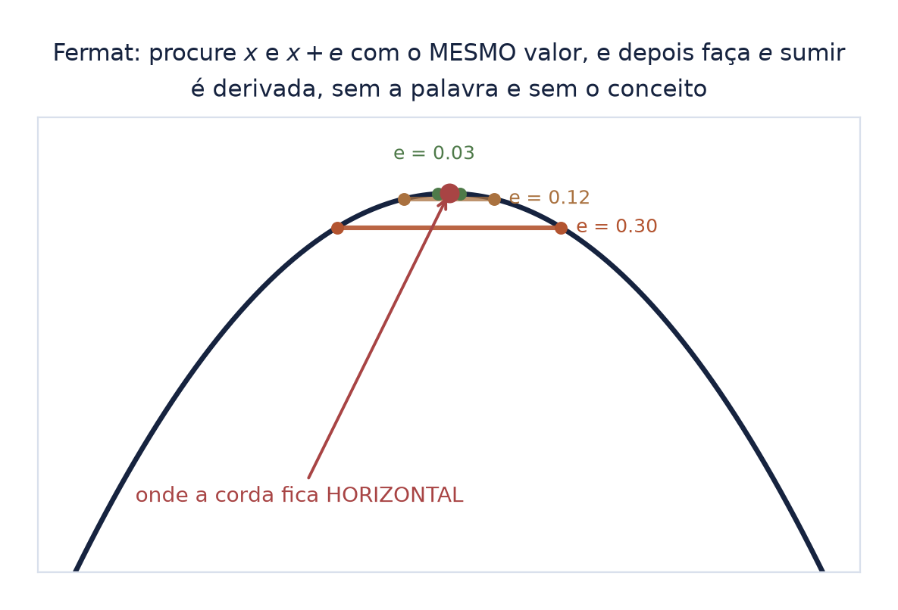
A tangente qualquer é mais difícil que a horizontal. A ideia é a mesma de sempre: tome a secante, que passa por dois pontos e se calcula, e aproxime um do outro.
"eme igual a: f de a mais agá, menos f de a, sobre agá".
com \(h \neq 0\) isso é uma fração comum, e a reta existe. Com \(h = 0\) vira \(0/0\) e não significa nada. A pergunta do cálculo é: o que acontece no caminho?
E é exatamente aqui que o próximo seminário começa — porque essa pergunta precisa de uma operação que ainda não temos.
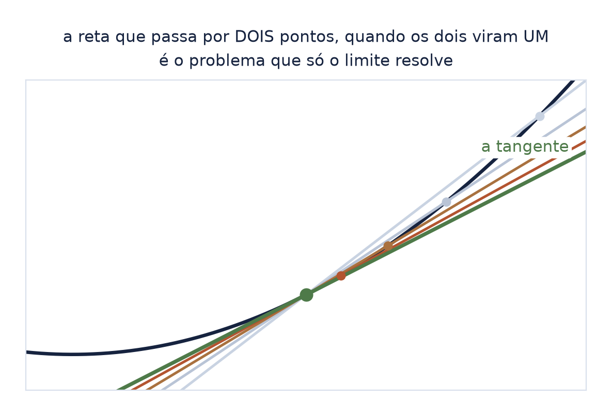
O deck zero ensinou a ler o comportamento: sobe, desce, tem buraco. Esta estação pede algo mais difícil — dizer de que família a curva é. E catálogo não resolve: todo catálogo é escolha de quem escreve. O que existe é um organizador — o que a taxa faz.
E a taxa se mede antes de o limite existir: a secante da folha anterior, com passo fixo, em vários pontos.
"eme de x igual a: f de x mais agá, menos f de x menos agá, sobre dois agá".
Atenção à palavra. Na folha 5, taxa era a velocidade com que o erro caía; aqui é a taxa de variação da própria curva. Mesma palavra, dois papéis.
mede-se a inclinação de uma cordinha centrada no ponto — e com passo pequeno e fixo o número sai sem que nenhum limite exista.
Na parábola da folha 8, cinco medidas bastam: elas caem sobre uma reta.
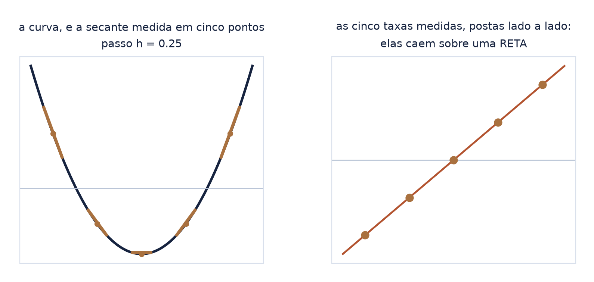
Para cada desenho ao lado, escolha três ou quatro pontos, meça a taxa neles e olhe o que a sequência de taxas faz:
Decida antes de virar a folha. Não há resposta a decorar aqui: o ganho é o reflexo, como no treino do deck zero.
nomear a curva de fora é decoreba; medir a taxa e concluir é leitura
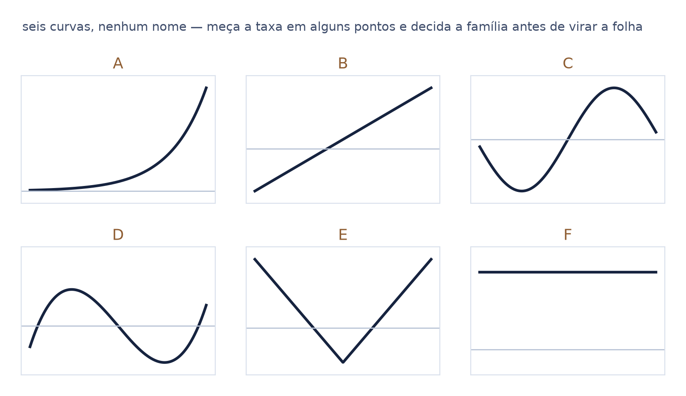
a última linha é a que fecha a lista. Bico e salto não são famílias de curva — são lugares onde a taxa não tem o que medir, e é por isso que eles entram aqui junto das outras.
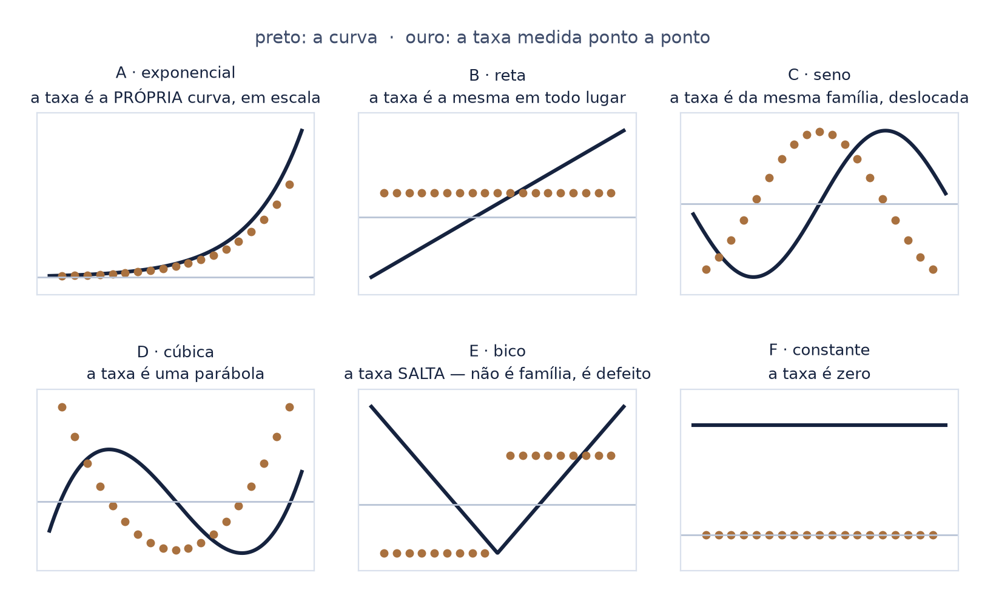
A pergunta parece de gosto — alguém escolheu esses capítulos. Não escolheu: são as que a taxa não tira do lugar.
Polinômio deriva em polinômio, com o grau caindo de um. A exponencial \(e^{x}\) deriva nela mesma. Seno e cosseno derivam um no outro, e voltam ao começo depois de quatro passos.
"e elevado a x".
uma família que a taxa levasse para fora dela mesma não teria capítulo: cada conta abriria um objeto novo, e não haveria o que aprender de uma vez.
E o deck para aqui, no mesmo lugar de sempre. Medir a taxa é uma coisa; provar que ela é aquela é outra, e precisa da operação que o próximo seminário traz. O bico é a prova viva disso: a taxa medida nele depende do passo — diminua o passo e a resposta muda.
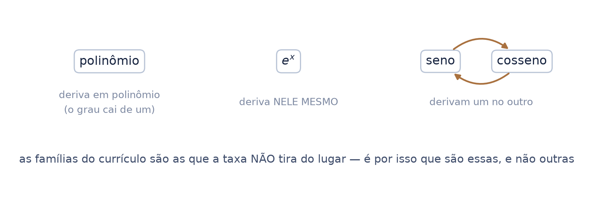
O círculo aproximado por polígonos de mais e mais lados não é curiosidade de 2.200 anos atrás: é literalmente o que um renderizador faz com uma esfera.
A curva lisa que se vê na tela é mentira feita de segmentos retos. Aumentar a subdivisão da malha é o gesto de Arquimedes com outro nome — e o erro cai do mesmo jeito que a folha 4 mediu: dobrar os lados divide o erro por quatro.
quando o artista arrasta o controle de subdivisão até a silhueta parar de mostrar facetas, ele está fazendo exaustão. A pergunta "quantos lados bastam?" é a mesma que Arquimedes respondeu com noventa e seis.
E a tangente de Fermat emenda no mesmo lugar: a normal de uma superfície — a seta que diz para onde cada pedaço dela aponta — sai da derivada. Sem derivada não há sombreamento: nenhuma superfície pega luz sem que se saiba para onde ela olha.
As duas perguntas que abriram este deck são, hoje, duas linhas de código dentro de qualquer renderizador.
Este seminário mora em sequências — e no mapa de pré-requisitos a sequência vem depois do limite, não antes. A série faz o contrário de propósito, e é o único lugar onde isso acontece.
A razão é de ensino, não de estrutura: Arquimedes e Fermat calculavam limites sem a palavra. A exaustão é um limite ao longo dos naturais, e dá para fazer a conta inteira antes de ter o nome — que é o que este seminário faz.
o mapa responde “o que precisa vir antes”; a aula responde “por onde é mais fácil entrar”. As duas perguntas são diferentes, e aqui elas discordam — com o desacordo declarado.
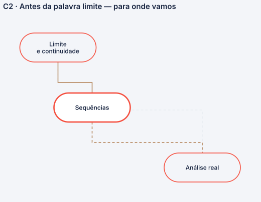
Nenhum é decoração: cada um entrou com o conceito que carrega, e volta aqui só para conferência.
| \(\pi\) | lê-se "pi": a razão entre a circunferência e o diâmetro |
| \(n\) | aqui, o número de lados do polígono |
| \(O(1/n^2)\) | lê-se "ó de um sobre ene ao quadrado": o erro cai como \(1/n^2\) |
| \(e\) | em Fermat, o deslocamento que no fim vira zero — nada a ver com o número \(e\) |
| \(h\) | a distância entre os dois pontos da secante |
| \(m\) | a inclinação de uma reta |
| épsilon da dupla | o menor passo que a máquina distingue perto de 1: \(2{,}22\times10^{-16}\) |
| exaustão | preencher uma figura com outras que se sabe medir, até não sobrar nada |
toda figura sai de script desta pasta, e todo número tem recibo com data. Nenhuma depende de arquivo de fora.
e faltava saber dizer, com precisão, o que significa "chegar"
Arquimedes aprisionou \(\pi\) entre dois calculáveis que se fecham. Fermat fez \(e\) desaparecer depois de dividir por ele. Os dois calcularam limites — sem a palavra, sem a definição e sem nenhuma garantia de que aquilo era legítimo.
O próximo seminário dá o nome. E o terceiro mostra que o aprisionamento de Arquimedes virou teorema.